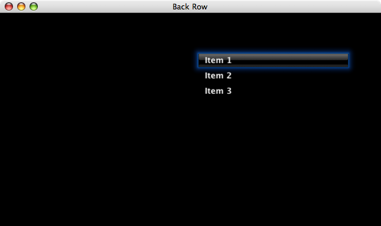
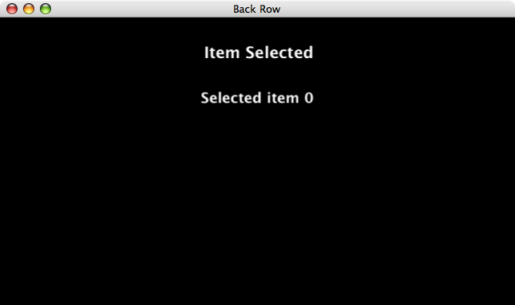

Step 4: Handling User Selections
The last thing we need to make our plugin complete is the ability to respond to user interaction. In menu controllers, this is done through the -itemSelected: callback method, which we'll implement now.
We'll take the simple approach and put up an alert dialog showing the item which was selected. To do this we use the BRAlertController class, and we'll build the alert message using NSString's -stringWithFormat: method. Once we've got our controller, we put it onscreen by pushing it onto the controller stack on which our menu controller currently resides.
NSString * msg = [NSString stringWithFormat: @"Selected item %d", row];
id controller = [BRAlertController alertOfType: kBRAlertControllerTypeMessage
titled: @"Item Selected"
primaryText: msg
secondaryText: @""
withScene: [self scene]];
[[self stack] pushController: controller];Now we're ready to compile and launch our appliance. Click the Build and Go button on the Xcode toolbar, and you will see the BackRow Test application launch and begin to play the Apple TV intro movie. When that is done, our appliance will be shown in the window, like so:

The initial appearance of our appliance.
You can control the interface using either the remote or the keyboard. At this point, let's select Item 1. As you can see, it shows a message, and you can press Menu or Escape to return to your plugin. However, the message doesn't have the correct value, so in the next step we'll use the Xcode debugger to fix that. Press Command-Q to quit the test harness.

An incorrect message is being displayed for Item 1.